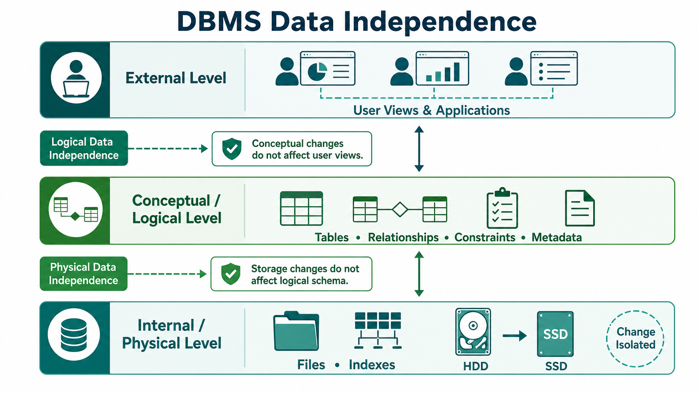

Excellent! This is one of the most confusing topics in DBMS, especially:
- Data Independence
- Logical Data Independence
- Physical Data Independence
Many IBPS SO IT questions directly ask:
- Difference between Logical and Physical Data Independence
- Which one is easier to achieve?
- Which one deals with storage?
After this explanation, you won't confuse them again.
DBMS - Data Independence
First Understand the Problem
Suppose you have a Banking Database.
Customer
↓
Account
↓
TransactionNow suppose you want to make a small change.
Example
You want to add one column
EmailQuestion:
Should the entire banking software stop working?
Obviously,
❌ No.
The change should happen without affecting everything else.
This is why Data Independence exists.
Why Do We Need Data Independence?
Book says
If a database is not multi-layered, then it becomes difficult to make changes.
Let's understand.
Imagine your house.
Electric wiring
↓
Inside wall
Furniture
↓
Outside
Suppose you replace the electrical wires.
Should you replace the sofa?
No.
Because both are independent.
Similarly,
Database also separates
- Storage
- Structure
- User View
So one change doesn't affect everything.
What is Data Independence?
Definition
Data Independence means
The ability to change one level of the database without affecting the next higher level.
Simply,
Change one layer → Other layers continue working normally.
Easy Example
Suppose
Your mobile has
Instagram App
↓
Android OS
↓
StorageNow suppose
You buy a faster SSD (storage).
Will Instagram stop working?
No.
Storage changed.
App remains the same.
This is exactly
Data Independence.
Book says
DBMS stores
- User Data
- Metadata
Quick Revision
User Data
Actual data.
Example
| ID | Name |
|---|---|
| 1 | Rahul |
Metadata
Data about Data.
Example
Table Name = Student
Column = Roll
Datatype = IntegerMetadata tells the DBMS how the database is structured.
Why is Metadata Important?
Book says
Changing metadata is difficult.
Why?
Suppose your Student table has
Roll No
Name
AgeNow imagine removing Roll No.
Every program using this table must change.
That's why DBMS tries to protect metadata.
Why Data Independence?
Book says
As DBMS grows,
Requirements change.
Example
Today
StudentTomorrow
Need
Student
EmailNext year
Need
Student
Email
Phone NumberChanges are normal.
Without Data Independence,
every program would need rewriting.
Layered Architecture
Book says
Metadata follows layered architecture.
Remember the Three-Schema Architecture:
User View (External Level)
│
▼
Logical Schema (Conceptual Level)
│
▼
Physical Storage (Internal Level)Each layer is independent.
Changes in one layer should not unnecessarily affect the others.

Types of Data Independence
There are only 2 types.
- Logical Data Independence
- Physical Data Independence
1. Logical Data Independence
⭐⭐⭐⭐⭐
Very Important
Book says
Logical data stores information about
How data is managed.
Example
Tables
Relations
Constraints
Views
Simple Meaning
Logical Data Independence means
You can change the logical structure of the database without affecting the user's view or application programs.
What changes here?
Things like
- Add a column
- Remove a column
- Split a table
- Merge tables
- Add relationships
Example 1
Initially
Student Table
| Roll | Name |
|---|
Later
You add
| Roll | Name |
|---|
Database structure changed.
Suppose the old application only displays
Roll
and
Name.
It should continue working.
That is Logical Data Independence.
Example 2
Original
Employee
ID
Name
DepartmentLater
Department moved into another table.
Employee
ID
Name
DepartmentIDDepartment
DepartmentID
DepartmentNameDatabase design changed.
Users should still see
Employee Name
Department Name
No problem.
That is Logical Data Independence.
Book says
Changes in table format
should not affect
data stored on disk.
Why?
Suppose
You rename
Student_Nameto
NameOnly logical structure changed.
Actual stored data remains the same.
Easy Trick
Logical
↓
Tables
Columns
Relationships
Views
Constraints
2. Physical Data Independence
⭐⭐⭐⭐⭐
Very Important
Book says
Actual data is stored
as bits
on the disk.
Simple Meaning
Physical Data Independence means
You can change how the data is physically stored without changing the logical schema or application.
Think of your laptop.
Old Hard Disk
↓
New SSD
Everything still works.
Exactly the same idea.
What changes here?
Things like
- Hard Disk → SSD
- B-Tree Index → Hash Index
- File Organization
- Storage Blocks
- Compression
- Storage Device
Example
Today
Database stored on
Hard Disk.
Tomorrow
Company upgrades
to SSD.
Will application change?
No.
Users don't even know.
That is
Physical Data Independence.
Another Example
Database stored
using
File A.
Tomorrow
Database stored
using
File B.
Application
Same.
Book Example
Book says
Replace
Hard Disk
↓
SSD
No impact
on
Logical Schema.
Perfect example of
Physical Data Independence.
Easy Trick
Physical
↓
Storage
Disk
Files
Indexes
Complete Picture
Users
↓
Logical Schema
↓
Physical StorageIf Storage Changes
Hard Disk
↓
SSDLogical Schema
No change.
Application
No change.
This is
Physical Independence.
If Logical Structure Changes
Add Email ColumnStorage
No problem.
User Application
Still works.
This is
Logical Independence.
Real-Life Example
Imagine a Library.
Physical Change
Books shifted
Shelf A
↓
Shelf B
Visitors don't care.
They still ask
"Give me DBMS book."
This is
Physical Independence.
Logical Change
Library changes
Category
Computer Scienceto
Information TechnologyBooks remain the same.
Only organization changes.
Visitors still get books.
This is
Logical Independence.
Difference Between Logical and Physical Data Independence
| Logical Data Independence | Physical Data Independence |
|---|---|
| Changes logical structure | Changes physical storage |
| Deals with tables, columns, relationships | Deals with files, indexes, storage devices |
| Harder to achieve | Easier to achieve |
| Applications should not be affected | Logical schema should not be affected |
| Example: Add Email column | Example: HDD → SSD |
Which is Harder?
This is a favorite exam question.
Physical Data Independence
Easy
Why?
Changing storage usually doesn't affect users.
Logical Data Independence
Hard
Why?
Changing tables or relationships may affect many programs.
IBPS Question
Which is more difficult?
✅ Logical Data Independence
Easy Memory Trick
Logical
Think
Logic
Tables
Columns
RelationshipsPhysical
Think
Hardware
Hard Disk
SSD
Files
IndexesExample That You'll Never Forget
Suppose you use Instagram.
Physical Change
Instagram server changes
Hard Disk
↓
SSD
Can users still use Instagram?
✅ Yes
Physical Independence.
Logical Change
Instagram adds
"Bio"
column
Old users continue using the app.
Database changed.
Application still works.
Logical Independence.
Complete Flow
Presentation Layer
↓
Logical Schema
↓
Physical StoragePhysical Independence
Storage changes
↓
Logical Schema unchanged
↓
Application unchangedLogical Independence
Logical Schema changes
↓
User View unchanged⭐ IBPS SO IT Quick Revision
| Topic | Remember |
|---|---|
| Data Independence | Ability to change one level without affecting another |
| Logical Data Independence | Change logical structure without affecting applications |
| Physical Data Independence | Change physical storage without affecting logical schema |
| Logical Changes | Tables, Columns, Views, Relationships, Constraints |
| Physical Changes | Files, Indexes, Hard Disk, SSD, Storage Blocks |
| Easier to achieve | Physical Data Independence |
| Harder to achieve | Logical Data Independence |
🎯 IBPS SO IT Frequently Asked Questions
Q1. What is Data Independence?
✅ The ability to modify one level of the database without affecting higher levels.
Q2. What is Logical Data Independence?
✅ The ability to change the logical schema (tables, columns, relationships) without affecting application programs or user views.
Q3. What is Physical Data Independence?
✅ The ability to change physical storage (files, indexes, storage devices) without affecting the logical schema.
Q4. Which is easier to achieve?
✅ Physical Data Independence
Q5. Which is harder to achieve?
✅ Logical Data Independence
Q6. HDD is replaced with SSD. Which type of data independence is this?
✅ Physical Data Independence
Q7. A new column (Email) is added to the Student table without affecting existing applications. Which type of data independence is this?
✅ Logical Data Independence
🧠 Final Memory Trick (Very Important)
Remember these two keywords:
- Logical = "What is stored?" → Tables, columns, relationships, views.
- Physical = "How is it stored?" → Hard disk, SSD, files, indexes.
If you remember "What" vs "How", you'll be able to answer almost every Data Independence question in the IBPS SO IT exam.